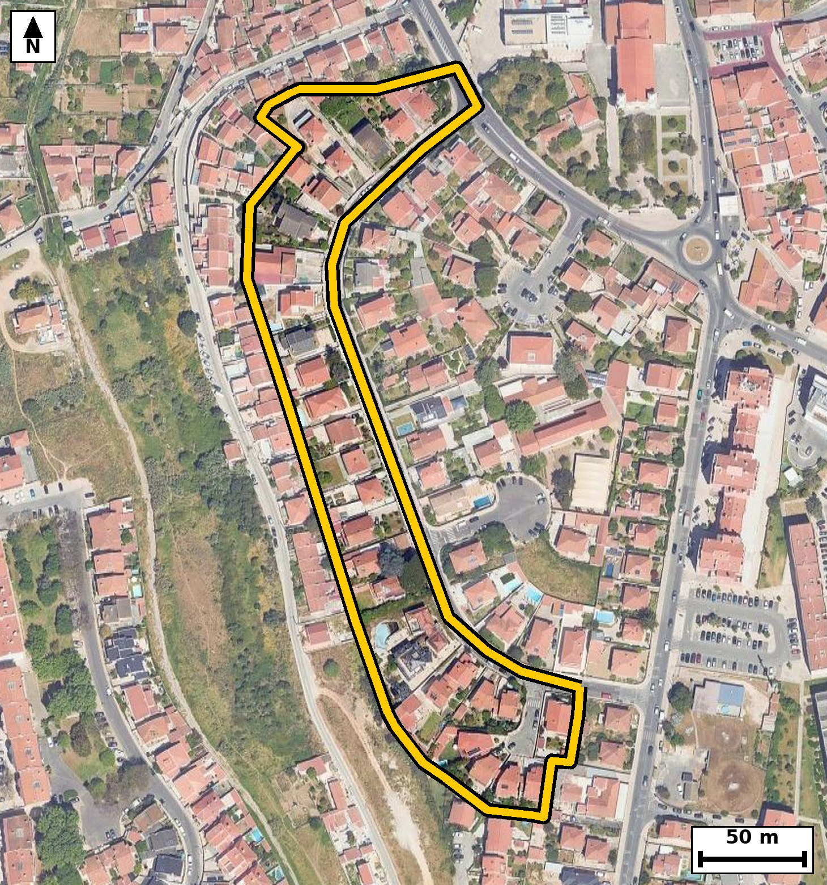

Nº 41
Nº 444
Nº430
Nº264
Nº363
Nº203
Nº89
Nº?
Nº1081
Nº?
Nº82
Nº1 / 14
nº893
R. Joaquim Sobral
R. do Bairro Novo
Ciclovia Avenida Conde
de Riba D'ave -
Carcavelos
Cç. do Bairro Novo
Pct. Dom Pedro de
Mascarenhas
Estr. da Rebelva
R. Gago Coutinho
R. dos Girassóis
R. Dom Pedro de
Mascarenhas
Pct. do Sol
Av. Conde de Riba D'Ave
R. do Rio
R. Sacadura Cabral
R. António Silva
R. João Villaret
Pct. Dom Duarte de Menezes
R. Pêro de Alenquer
R. do Zambujal
![Código QR para abrir no Google Maps]()